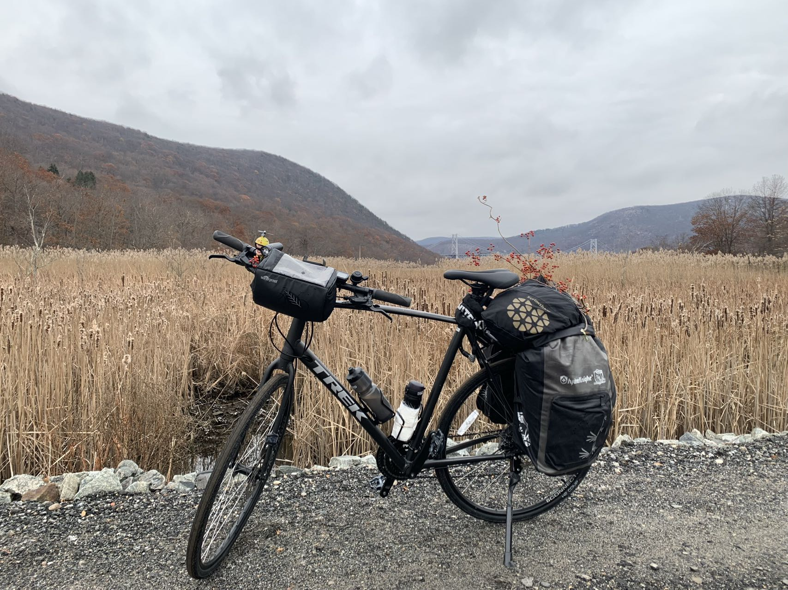
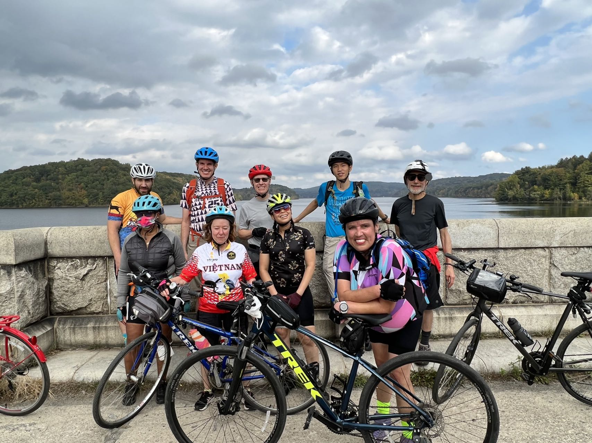

Adapting to Change and Learning Resilience
As time passed, I realized I needed to adapt to my new environment and cultivate resilience. I began by setting small goals for myself each week, such as exploring a new neighborhood every weekend. This not only familiarized me with my surroundings but also helped me uncover hidden gems.
I joined a cycling community, NYCC (New York Cycling Club), where I could hang out with new people every weekend and explore the city on our bikes. By joining local interest groups and attending workshops, I found like-minded individuals who were also navigating their own transitions.
Through this process, I learned the importance of flexibility. Instead of resisting change, I embraced it as an opportunity for personal growth. This shift in mindset empowered me to face future challenges with confidence, knowing I could navigate the unknown.
 